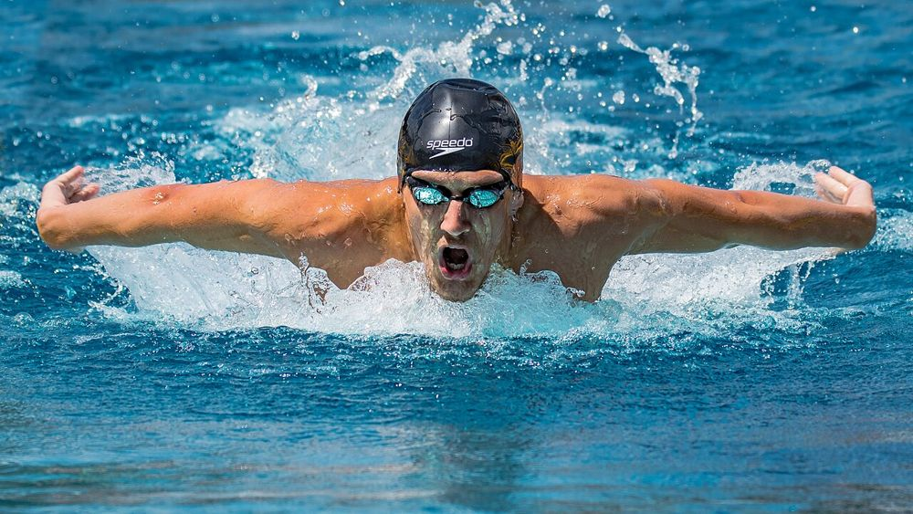

🏅 בוקר טוב ספורט
שיא עולם בשחייה: 50 מטר פרפר ב־21.28 שניות
10 באוקטובר 2026 ממהדורה 2 · 11 באוקטובר 2026
ביום שבת, 10 באוקטובר 2026, קבע השחיין הרוסי יגור קורנייב, בן 22, שיא עולם חדש ב־50 מטר בסגנון פרפר. זה קרה בתחרות גביע העולם בשחייה בטשקנט שבאוזבקיסטן.
קורנייב שחה את המרחק ב־21.28 שניות, מהר יותר בארבע מאיות השנייה מהשיא הקודם של השחיין השווייצרי נואה פונטי מ־2024. ארבע מאיות זה פחות ממצמוץ עין!
התחרויות בגביע העולם נערכות בבריכה ״קצרה״ של 25 מטר, ולא בבריכה של 50 מטר כמו באולימפיאדה. רק שמונה ימים קודם לכן, בבאקו שבאזרבייג׳ן, השווה קורנייב את שיא העולם ב־100 מטר חופשי. ועוד חדשה לאוהבים ולאוהבות שחייה: במשחקים האולימפיים בלוס אנג׳לס ב־2028 יתחרו לראשונה גם ב־50 מטר פרפר.
💬 לחשוב ולשוחח: מה עוד אפשר לעשות ב־21 שניות? נסו לספור, לקפוץ או לכתוב משהו ב־21 שניות, והשוו.
מקורות וקרדיטים
📰 מקורות המידע
- Egor Kornev breaks 50m butterfly world record at swimming World Cup · NBC Sports (10 באוקטובר 2026)
📖 להעמיק ולקרוא עוד
- שחייה תחרותית · ויקיפדיה
- Egor Kornev · Wikipedia (אנגלית)
תמונה: Isiwal · רישיון: CC BY-SA 4.0 · מקור התמונה
הידיעה נכתבה במילים שלנו על סמך המקורות.